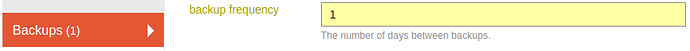
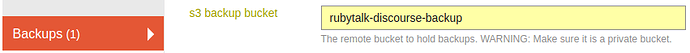

This guide explains how to configure automatic backups for Discourse, including storage options on local servers and S3-compatible storage.
Learn how to set up automatic backups for your Discourse platform.
This guide covers configuring automatic backups, storing them on local servers or S3-compatible storage, and managing storage retention options like Amazon Glacier.
Configuring automatic backups
- Navigate to
/adminsettings. - Select the Backup section.
- Set
backup_frequencyto the desired interval in days. The default is7(weekly). Set to1for daily backups, or0to disable automatic backups. The maximum is30.

backup_frequency100%75%50%Additional backup settings
-
backup_time_of_day— the time of day (UTC) when backups run. Default:3:30. -
backup_with_uploads— include uploads in scheduled backups. Default: enabled. Disabling this will only back up the database. -
maximum_backups— the maximum number of backups to keep. Older backups are automatically deleted. Default:5. -
remove_older_backups— remove backups older than the specified number of days. Leave blank to disable.
Store backups on the local server
By default, backups are stored on your local server. For self-hosted instances, access them at /var/discourse/shared/standalone/backups/default.
Store backups on S3-compatible storage
Using the admin panel
- Create an S3 bucket.
- Set the
s3_backup_bucketin the admin panel.
- Follow steps in setting up S3 uploads.
- Configure
s3_access_key_id,s3_secret_access_key, ands3_region. - Set
backup_locationto “S3”.

WARNING
Storing backups and regular uploads in the same bucket and folder is no longer supported and will not work.
The
s3_backup_bucketpath should only be used for backups. If you need to use a bucket that contains other files please make sure that you provide a prefix when you configure thes3_backup_bucketsetting (example:my-awesome-bucket/backups) and make sure that files with that prefix are private.
From now on all backups will be uploaded to S3 and not be stored locally anymore. Local storage will only be used for temporary files during backups and restores.
Go to the Backups tab in the admin dashboard to browse the backups – you can download them any time to do a manual offsite backup.
Using environment variables in app.yml
You can also configure S3 backups using environment variables in app.yml. For more information, see Configure an S3 compatible object storage provider for uploads
Note that the above article covers app.yml covers S3 setup for backups and for file/image uploads. If you only want to use S3 for backups (and not for uploads of files/images), then you can omit the following parameters from your app.yml config:
DISCOURSE_USE_S3DISCOURSE_S3_CDN_URLDISCOURSE_S3_BUCKET
You also don’t need to configure the after_assets_precompile step in this case, nor configure a CDN.
Be sure to include all other parameters that are required for your storage provider, as mentioned in the article. Here is one example configuration that only activates S3 for backups (for Scaleway S3):
DISCOURSE_S3_REGION: nl-ams
DISCOURSE_S3_ENDPOINT: https://s3.nl-ams.scw.cloud
DISCOURSE_S3_ACCESS_KEY_ID: my_access_key
DISCOURSE_S3_SECRET_ACCESS_KEY: my_secret_access_key
DISCOURSE_S3_BACKUP_BUCKET: my_bucket/my_folder
DISCOURSE_BACKUP_LOCATION: s3
Archiving to storage with a lower cost
Note that on AWS S3, you can also enable an automatic move to Glacier bucket lifecycle rule to keep your S3 backup costs low. Other storage providers often have a similar offering.
Last edited by @SaraDev 2024-11-07T20:36:45Z
Check document
Perform check on document:


{kind=link}
{kind=link}
{kind=link}
{kind=link}
{kind=link}
{kind=link}
{kind=link}
{kind=link}
{kind=link}